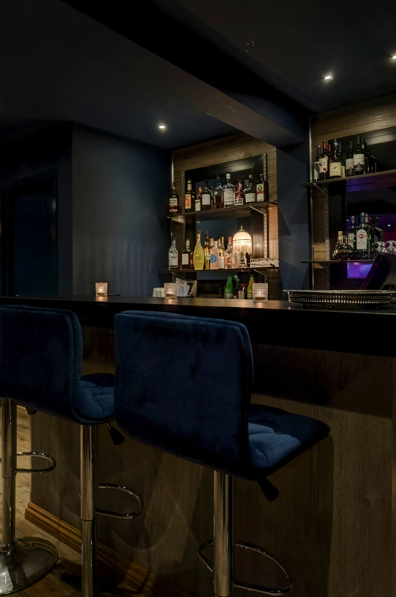
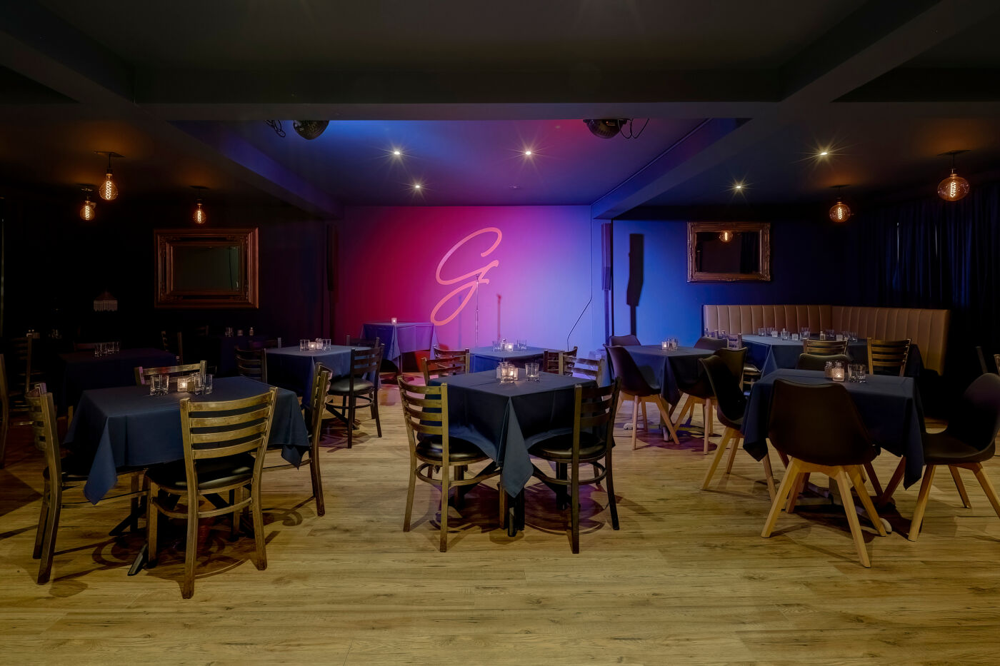
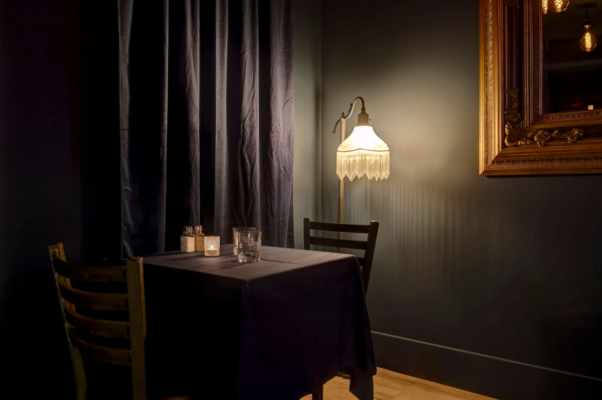
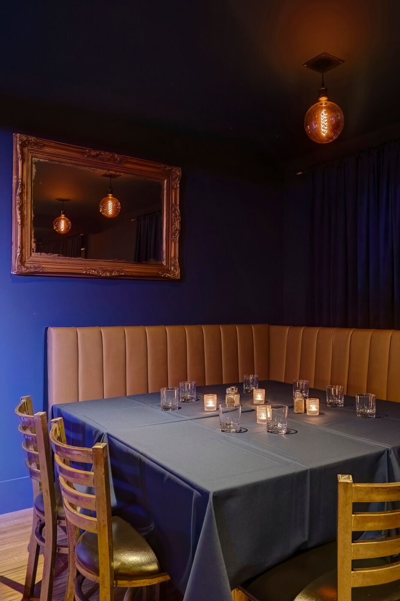
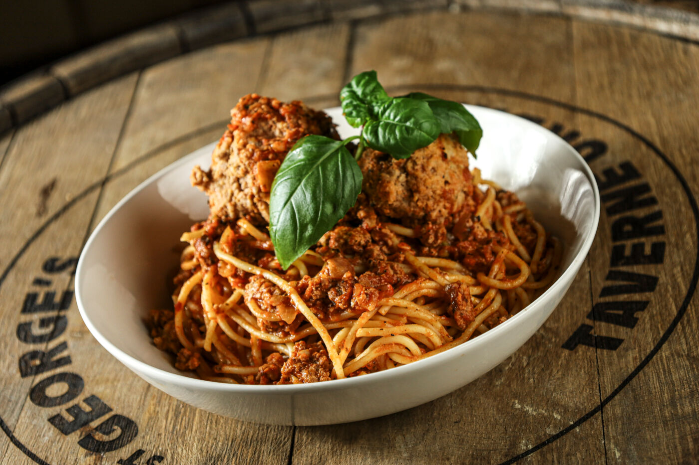

Invités
Une capacité confortable pour les événements intimes comme les grandes célébrations.
Au 2e étage du St George's
Un lieu intime, chaleureux et entièrement privé pour vos événements corporatifs ou festifs à Saint-Jérôme.
Demander une réservationVotre événement, à votre image
Notre Salle Point G peut accueillir jusqu’à 70 invités. C’est le cadre idéal pour une fête, un anniversaire, un party de bureau, un lancement ou toute autre occasion à célébrer.
Vous bénéficiez d’un espace réservé, de notre service attentionné et de toute l’ambiance distinctive du St George’s.

Ce qui vous attend
Une capacité confortable pour les événements intimes comme les grandes célébrations.
Parfaits pour une présentation, un match, un montage photo, du contenu personnalisé ou le karaoké.
Un équipement professionnel pour vos discours, votre musique, votre animation, vos soirées karaoké, un DJ, un musicien ou un chansonnier.
Service de bar complet et menu disponible, du style taverne jusqu’à la fine cuisine italienne, en collaboration avec l’excellent Ristorante Voga.
Découvrez l’espace




Réserver la Salle Point G
Décrivez-nous votre occasion, la date souhaitée et le nombre d’invités. Nous vous répondrons avec une proposition adaptée.
reservation@stgeorgestaverne.ca
450 436-6446